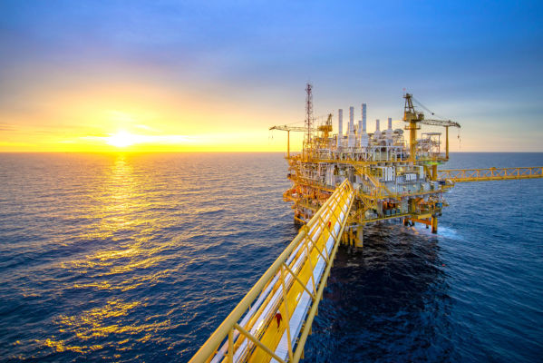
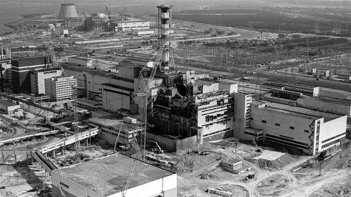

As energias renováveis são os resultados de recursos naturais que se renovam, por isso, são inesgotáveis. Energia Renovável é essencial para a continuação da vida humana, já que as energias não renováveis algum dia vão acabar. Elas reduzem a poluição do ar com queima de combustíveis. Dentre as energias renováveis:

A maremotriz é a energia das marés, esse energia acontece por meio do movimento que as marés apresentam. Pode-se obter dois tipos de energia maremotriz: a energia cinética das correntes devido as marés e a energia potencial pela diferença de altura entre as marés alta e baixa.
No Brasil, existe uma usina maremotriz, ela é um projeto pioneiro já que não existe uma usina maremotriz em toda a américa latina. Essa usina está localizada no quebra-mar do Porto de Pecém no Ceará, ela foi planejada para começar a funcionar em 2020, mesmo o início da obra sendo em 2012.

Energia Solar: energia solar é abundante e pode ser utilizada de diversas maneiras. A maneira mais simples de se aproveitar essa energia é através de soluções de arquitetura que privilegiem a iluminação solar ou o controle natural da temperatura. Há também a possibilidade de se utilizar de sistemas de captação da energia solar para depois utilizá-la. Hoje existem três tipos principais sistema de energia solar: Sistema Solar Térmico, Sistema Solar Fotovoltaico e Sistema Termossolar.

Nestes sistemas, a energia é captada através de painéis solares térmicos, também chamados de coletores solares. São os sistemas mais simples, econômicos e conhecidos de aproveitar o sol, sendo utilizados em casas, hotéis e empresas para o aquecimento de água para chuveiros ou piscinas, aquecimentos de ambientes ou até em processos industriais. Os painéis são simples e têm a função de transferir o calor da radiação solar para a água ou óleo que passa por dentro deles para então ser utilizado como fonte de calor.
Estes sistemas são capazes de gerar energia elétrica através das chamadas células fotovoltaicas. As células fotovoltaicas são geralmente montadas em módulos ou painéis solares fotovoltaicos e to fotovoltaico”, presente em alguns materiais, sendo o mais utilizado o silício.
Os sistemas termossolares produzem inicialmente calor, através de um sistema de espelhos (ou concentradores) que concentram a radiação solar, e só então transformam este calor em energia elétrica. Não deixam de ser um tipo de energia solar térmica, porém o seu propósito final é gerar energia elétrica. Este é o tipo menos difundido de energia solar devido ao alto custo e complexidade.
Comparando os três sistemas, a energia solar térmica é a mais eficiente e econômica, sendo, porém, restrita a energia térmica que não é capaz de acender uma lâmpada, por exemplo. Já a energia fotovoltaica é muito versátil e confiável, sendo utilizada até mesmo em satélites. Sua principal desvantagem é o alto custo, apesar da constante queda de preços. Uma segunda desvantagem é a dificuldade de armazenar a energia. Finalmente, a energia solar concentrada que também tem restrições devido ao alto custo, é mais adequada para grandes instalações. Por outro lado, ela une vantagens da energia solar térmica, por possibilitar a armazenagem do calor, enquanto também apresenta a versatilidade da energia elétrica.
A Energia Eólica é o processo pelo qual o vento é transformado em energia cinética e a partir dela em eletricidade com o uso de equipamentos específicos. O vento é usado como gerador de energia desde a antiguidade em sistemas como o bombeamento de água, a moagem de grãos e a movimentação de barcos.
A ONU (Organização das Nações Unidas) classifica a energia eólica como MDL (Mecanismo de Desenvolvimento Limpo) e a colocou como prioridade para investimentos no incentivo à chamada economia verde.
Hoje, a energia eólica é a mais buscada entre as fontes de energia renováveis. É a opção às fontes não renováveis que mais são utilizadas para abastecimento em todos os países. Os modelos de exploração de energia predominantes recebem críticas pelos intensos impactos ambientais que geram.
As termoelétricas contribuem para o efeito estufa devido ao lançamento de resíduos da queima dos combustíveis, como madeira, óleo ou carvão vegetal. A fonte mais utilizada no Brasil, as hidrelétricas alagam imensas áreas e alteram o curso dos rios. Já as usinas nucleares, representam risco de contaminação permanente por radiação.

A energia eólica é gerada com a movimentação de grandes turbinas conhecidas por aerogeradores, em formato de cata-vento ou de moinhos. As turbinas são instaladas em regiões onde há os ventos chamados predominantes. Seu funcionamento é basicamente feito pela transformação da energia cinética, em energia mecânica ou energia elétrica.
O exploração comercial da energia eólica no Brasil começou em 1992, quando foi instalado o primeiro aerogerador em Fernando de Noronha (PE). A matriz atual conta com 298 usinas eólicas instaladas e coloca o País como líder do setor no mercado sul-americano.
A produção diária média é de 2,9 megawatts médios, o suficiente para abastecer 13 milhões de pessoas. A energia eólica representa 3,5% da matriz energética brasileira. A meta do Ministério das Minas e Energia é chegar a 11% até 2023. Hoje, o Rio Grande do Sul lidera a produção de energia eólica no País, seguido pelo Ceará, Rio Grande do Sul e Bahia.

O Brasil é um dos países que mais utiliza as hidrelétricas como forma de obtenção de energia, ficando atrás apenas dos Estados Unidos e do Canadá; o país, juntamente com o Paraguai, construiu Itaipu, a maior usina hidrelétrica do mundo. Isso é explicado devido ao grande potencial hídrico que o Brasil possui.
A água dos rios movimenta uma turbina hidráulica que é ligada a um gerador, o qual produz a energia elétrica e a transmite para a rede de distribuição. O potencial hidráulico é proporcionado pela concentração dos desníveis existentes ao longo do curso de um rio, especialmente dos rios planálticos.
Assim como todo empreendimento energético, as hidrelétricas provocam alguns tipos de impactos ambientais, os quais são motivos de polêmica nas discussões sobre desenvolvimento sustentável. Embora a energia hidrelétrica seja considerada limpa e renovável, a construção de uma hidrelétrica pode provocar o alagamento de áreas vizinhas e o aumento no nível dos rios, destruindo o habitat natural de muitas espécies, principalmente de animais aquáticos.
Em todo o mundo, a energia hidrelétrica representa 19% da eletricidade consumida no ano de 2005, produzindo um total de 930 mil megawatts, equivalente a 5 bilhões de barris de petróleo.

As Usinas de Aimorés e Funil possuem um sistema de reservatório chamado fio d’água. O fluxo de água do rio, ou seja, sua vazão determina a quantidade de energia gerada. O volume de chuvas tem impacto direto na geração de energia nas usinas hidrelétricas, aumentando sua produção. Toda a água que chega pelo rio é utilizada para a geração, por isso não há acumulo nos períodos de cheia, nem desperdício.
Este tipo de hidrelétrica tem como vantagem a redução de áreas alagadas e, por consequência, maior preservação das áreas de entorno do reservatório e a proteção da fauna e da flora.
Finalizado o processo de produção da hidrelétrica, a energia gerada é enviada, por meio das chamadas linhas de transmissão, ao Sistema Interligado Nacional, que é responsável por receber e direcionar essa energia para as companhias distribuidoras, que por sua vez darão a destinação da energia para o consumidor final, em todo o Brasil.

A energia geotérmica ou geotermal é a energia que é gerada por meio do calor que vem do interior da Terra, que é transformado em eletricidade nas usinas geotérmicas. Essa energia é obtida através das rochas quentes e do vapor quente.
Por gerar baixos índices de poluição no meio ambiente, a energia geotermal é considerada uma fonte renovável e limpa, mas não é muito utilizada por conta dos altos gastos para implementa-la.
Por ser uma fonte de energia proveniente do interior da Terra, deve-se tomar cuidado ao aproveita-la, pois pode provocar problemas geológicos, afetando a instabilidade se usada da forma errada.

As fontes não renováveis de energia são aquelas que se utilizam de recursos naturais finitas ou esgotáveis, seja em um futuro próximo, seja em um período de médio ou longo prazo. Em alguns casos, esse tipo de energia costuma apresentar problemas de ordem ambiental, além de disputas envolvendo a extração e comercialização de suas matérias-primas.
Os principais exemplos de fontes de energia não renováveis são:

O Carvão Mineral é um combustível fóssil que existe em maior abundância no planeta Terra. Estimativas dão conta de que existam reservas para durar aproximadamente uns 200 anos de livre consumo humano. Normalmente, esse tipo de combustível tem a coloração negra e brilhante, apesar de ser uma característica que pode variar.
O carvão mineral é originário da decomposição ocorrida nas florestas, durante o Período Carbonífero, que aconteceu na era primária. Essa foi uma das formas em que o elemento químico carbono, foi encontrado no universo.
A formação do carvão mineral acontece através de um processo em que há a transformação da celulose, com a erupção dos íons de hidrogênio e de oxigênio, além do complemento no enriquecimento do carbono.
Esse tipo de processo tanto pode ser ocasionado através da decomposição das florestas na própria região, quanto também por meio da sedimentação dos detritos vegetais que foram transportados pelas águas.
Nesse caso, é possível afirmar que as minas de carvão mineral simbolizam os restos de vegetais que com o passar do tempo foram se transformando na região, ou que foram conduzidos por grandes distâncias, onde de fato aconteceu a decomposição da celulose por meio da ação das bactérias.

O carvão mineral costuma ser extraído diretamente do solo, em minas que geralmente ficam a céu aberto. Isso significa muitos riscos para o meio ambiente, assim como para os operários e trabalhadores desses locais. O risco é ainda maior quando se trata das variedades mais inflamáveis desse combustível fóssil.
O petróleo é um líquido viscoso, menos denso que a água e formado por uma mistura complexa de compostos orgânicos, principalmente hidrocarbonetos (compostos cujas moléculas são formadas somente por átomos de carbono e de hidrogênio) associados a pequenas quantidades de outras classes de compostos que contêm nitrogênio, oxigênio e enxofre.
A teoria mais aceita para a formação do petróleo é a de que ele se originou de restos de seres vivos, animais e vegetais, ao longo de milhões de anos (estima-se que as reservas de petróleo tenham entre 10 e 500 milhões de anos). Ocorreu que principalmente pequenos seres marinhos, como animais e vegetais unicelulares, acabaram se depositando no fundo de lagos e mares. Com o tempo, houve acumulação de sedimentos e essa matéria orgânica foi empurrada para partes ainda mais profundas, onde condições elevadíssimas de pressões e temperatura, bem como ausência de oxigênio, impediram que bactérias realizassem a decomposição rápida dessa matéria orgânica. Mas sob ação de bactérias anaeróbicas, ela decompôs-se ao longo de milhões de anos, gerando o petróleo.
O petróleo fica armazenado no interior de poros ou espaços vazios de rochas impermeáveis (arenito), chamadas de rochas-reservatório. É daí que vem o nome petróleo, que significa óleo de pedra. Além disso, visto que são gerados pela decomposição de seres vivos, o petróleo, o gás natural e o carvão são denominados de combustíveis fósseis e são todos recursos esgotáveis, ou seja, não são renováveis.

Atualmente, graças aos avanços tecnológicos, as tecnologias envolvidas nos processos de extração e refino de petróleo foram muito bem desenvolvidas e é muito fácil explorar os campos de petróleo, independentemente das condições geográficas.
Além dos métodos de extração convencionais, nos últimos anos foram descobertos outros métodos não convencionais, como fraturamento ou fraturamento hidráulico, que é uma técnica para recuperar gás e óleo de rochas tão profundas que sua extração por mecanismos geralmente usados é impossível.
Sendo na forma líquida, pode ser facilmente transportado e armazenado. Ele pode ser mobilizado do local de extração para a refinaria ou usinas de energia por meio de oleodutos, como oleodutos e oleodutos, ou através de navios ou cisternas.
Oleodutos são tubos nos quais o óleo é transportado quando a distância entre o ponto de extração e a refinaria é grande e é a maneira mais rápida de fazê-lo.
Os polidutos funcionam da mesma maneira que os oleodutos, mas, além do petróleo, também podem transportar outros tipos de hidrocarbonetos, como gasolina, gasolina e gás.
Além de ser a principal fonte de energia para usinas de energia que atendem à demanda por energia recebida dia após dia, também é utilizada como fonte de energia para máquinas e veículos.
Também é usado para produzir materiais sintéticos, além de petroquímicos, como pesticidas e detergentes. Atualmente, vários produtos petrolíferos, como solventes e combustíveis, são produzidos com componentes de petróleo como eteno e propeno.
Surpreendentemente, um dos usos mais importantes do óleo é o de um destilado como o fenol, usado pela indústria farmacêutica para a preparação de aspirina, por exemplo.
Alguns compostos de petróleo (como hidrocarbonetos) representam um alto grau de toxicidade para a saúde. Aqueles que estão envolvidos na refinaria ou extração de petróleo, ou que residem perto de qualquer lugar onde essas práticas ocorram, estão expostos a sofrer danos à sua saúde.
De acordo com a ONG Greenpeace, estudos mostraram que em trabalhadores expostos ao benzeno, esse hidrocarboneto entrou no corpo pela pele em 20% ou 40% dos casos, causando irritação nos olhos e em parte do corpo. sistema digestivo, bem como depressão, náusea e tontura, se a exposição for maior.
Como todos os combustíveis fósseis naturais, não é renovável. Ou seja, ele não pode ser regenerado e, como continua a ser usado como a maior fonte de energia e continua a ser explorado, as reservas menores que permanecerão no futuro. Nada garante quanto tempo resta para acabar.
Por esse motivo, é de extrema importância continuar com a implementação do uso de outras fontes de energia, como solar ou eólica, através das quais nenhum dano é gerado ao meio ambiente. Ambos usam recursos naturais inesgotáveis e ajudam a promover a inovação tecnológica.
Quando o óleo é transportado, os derramamentos podem ocorrer devido a acidentes ou práticas impróprias nos corpos d’água, por exemplo, causando estragos na fauna marinha se o derramamento for muito extenso, como a morte de milhões de peixes e outros organismos.
A primeira coisa que ocorre em um derramamento de óleo é que um filme é gerado na superfície da água que impede a entrada de luz através dela e se espalha rapidamente graças às correntes marítimas e ao vento. Isso gera um nível extremamente alto de poluição, pois os componentes do óleo são muito tóxicos.
A extração e combustão de óleo, além de altamente complexa, também é muito poluente para o meio ambiente. Esses processos geram gases de efeito estufa que contribuem para o aquecimento global.
Da mesma forma, com o uso de seus derivados (como a gasolina), também contribui para a poluição, pois, com sua combustão, são gerados gases nocivos, como dióxido de carbono, óxido de nitrogênio e monóxido de carbono.
O Gás natural é um gás que possui origem fóssil, encontrado no subsolo terrestre ou marítimo, formado por hidrocarbonetos. O gás é formado em 70% por gás metano. Além dele, estão presentes o propano, nitrogênio, oxigênio, etano e enxofre.
O gás natural é formado pela decomposição(Atuam microrganismos de forma anaeróbica) de materiais orgânicos acumulados em rochas por milhares de anos.
Ele é muito utilizado como fonte de energia em indústrias, residências e veículos. Pode ser utilizado como combustível em veículos, sendo mais barato do que o álcool e a gasolina, além de poluir bem menos em comparação à outros combustíveis. Por isso é considerado uma fonte de energia limpa.

A energia nuclear, também chamada atômica, é obtida a partir da fissão do núcleo do átomo de urânio enriquecido, liberando uma grande quantidade de energia. A energia nuclear mantém unidas as partículas do núcleo de um átomo. A divisão desse núcleo em duas partes provoca a liberação de grande quantidade de energia.
Os primeiros resultados da divisão do átomo de metais pesados, como o urânio e o plutônio, foram obtidos em 1938. A princípio, a energia liberada pela fissão nuclear foi utilizada para objetivos militares. Posteriormente, as pesquisas avançaram e foram desenvolvidas com o intuito de produzir energia elétrica. No entanto, armas nucleares continuam sendo produzidas através do enriquecimento de urânio.

Atualmente os Estados Unidos lideram a produção de energia nuclear, porém os países mais dependentes da energia nuclear são França, Suécia, Finlândia e Bélgica. Na França, cerca de 80% de sua eletricidade é oriunda de centrais atômicas.
No fim da década de 1960, o governo brasileiro começou a desenvolver o Programa Nuclear Brasileiro, destinado a implantar no país a produção de energia atômica. O país possui a central nuclear Almirante Álvaro Alberto, constituída por três unidades (Angra 1, Angra 2, e Angra 3). Está instalada no município de Angra dos Reis, no estado do Rio de Janeiro. Atualmente, apenas Angra 2 está em funcionamento.
Essa fonte energética é responsável por muita polêmica e desconfiança: a falta de segurança, a destinação do lixo atômico, além da possibilidade de acontecerem acidentes nas usinas, geram a reprovação da utilização da energia nuclear por grande parte da população. Alguns acidentes em usinas nucleares já aconteceram, entre eles estão:
Three Miles Island – em 1979, na usina localizada na Pensilvânia (EUA), ocorreu a fusão do núcleo do reator e a liberação de elevados índices de radioatividade que atingiram regiões vizinhas.
Chernobyl – em 1986 ocorreram o incêndio e o vazamento de radiação na usina ucraniana, na extinta União Soviética, com milhares de feridos e mortos, podendo a contaminação radioativa ter causado 1 milhão de casos de câncer nos 20 anos seguintes.
A energia nuclear apresenta vários aspectos positivos, sendo de fundamental importância em países que não possuem recursos naturais para a obtenção de energia. Estudos mais aprofundados devem ser realizados sobre essa fonte energética, ainda existem vários pontos a serem aperfeiçoados, de forma que possam garantir segurança para a população.


Clique na imagem para acessar ao Quiz